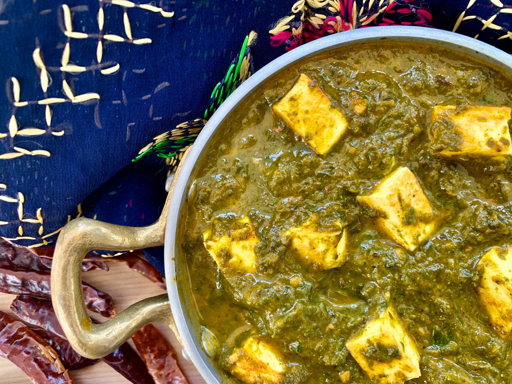
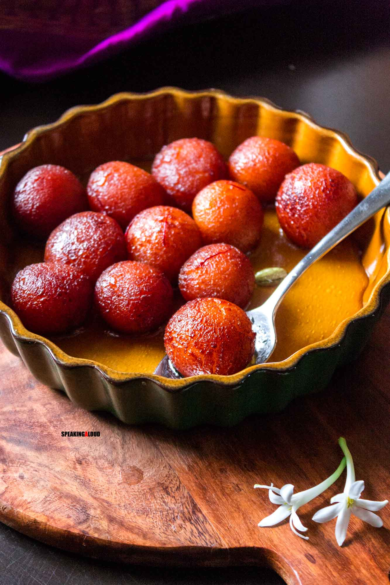

Popular Indian Dishes
Butter Chicken

Description: A rich and creamy tomato-based curry with tender chicken pieces.
Ingredients:
- 500g chicken (boneless)
- 2 cups tomato puree
- 1 cup cream
- 2 tbsp butter
- 1 tbsp ginger-garlic paste
- 1 tsp garam masala
- Salt to taste
Preparation Steps:
- Marinate chicken with spices and grill until golden.
- Prepare curry with butter, tomato puree, and cream.
- Add chicken and simmer until fully cooked.
- Serve with naan or steamed rice.
Biryani

Description: A flavorful mixed rice dish cooked with spices, meat, and herbs.
Ingredients:
- 2 cups basmati rice
- 500g chicken or lamb
- 1 onion (sliced)
- 1 cup yogurt
- Spices (cinnamon, cloves, cardamom)
- Saffron water
Preparation Steps:
- Marinate meat with yogurt and spices.
- Layer cooked rice and meat in a pot.
- Simmer on low heat until flavors blend.
- Garnish with saffron and serve hot.
Masala Dosa

Description: A crispy rice pancake stuffed with spicy potato filling.
Ingredients:
- 2 cups rice
- 1 cup urad dal
- 2 boiled potatoes
- 1 onion (chopped)
- Spices (turmeric, mustard seeds)
Preparation Steps:
- Ferment rice and dal batter overnight.
- Cook dosa on a hot griddle.
- Prepare potato filling with spices.
- Stuff the dosa and serve with chutney.
Palak Paneer
Description: A creamy spinach curry with soft paneer cubes.
Ingredients:
- 2 cups spinach (pureed)
- 200g paneer (cubed)
- 1 onion (chopped)
- 1 tsp garam masala
- 1 cup cream
Preparation Steps:
- Sauté onions and spices in a pan.
- Add spinach puree and simmer.
- Add paneer cubes and cream.
- Serve hot with naan or roti.
Gulab Jamun
Description: Deep-fried milk balls soaked in sugar syrup.
Ingredients:
- 1 cup milk powder
- 2 tbsp all-purpose flour
- 2 cups sugar
- 1/2 tsp cardamom powder
Preparation Steps:
- Prepare a soft dough with milk powder and flour.
- Deep-fry the balls until golden brown.
- Soak in sugar syrup flavored with cardamom.
- Serve warm or chilled.